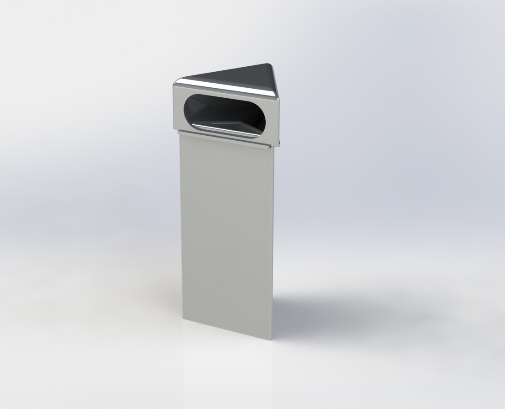

Your trash can just got smarter.

Meet your Smart Trash Can
introduction to the smart trash can's features goes here.
up to 25%
The amount of recyclables rejected due to contamination or for being unacceptable for recycling
75%
The amount of the US waste stream that CAN be recycled or composted
34%
The amount of the US waste stream that IS recycled or composted